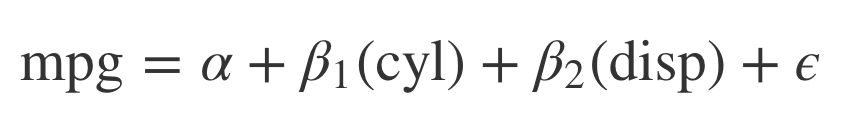
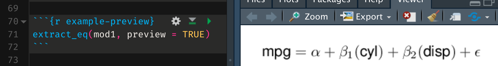
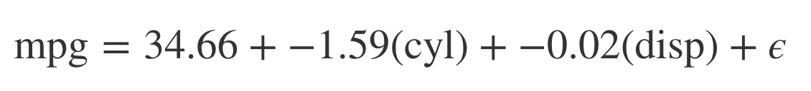
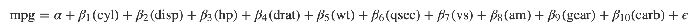
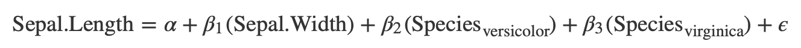
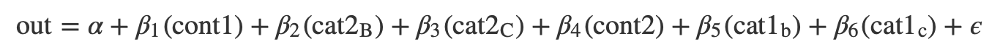
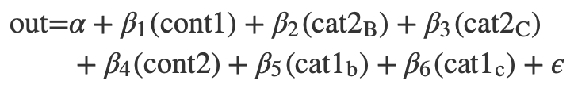
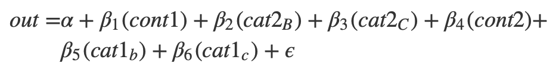
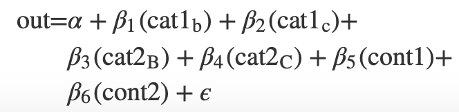

The goal of equatiomatic is to reduce the pain associated with writing LaTeX code from a fitted model. In the future, the package will support any model supported by broom; so far it has only been tested with lm and glm models.
Examples

The gif above shows the basic functionality.
In non-gif form:
library(equatiomatic)
# Fit a simple model
mod1 <- lm(mpg ~ cyl + disp, mtcars)
# Give the results to extract_eq
extract_eq(mod1)
#> $$
#> \text{mpg} = \alpha + \beta_{1} (\text{cyl}) + \beta_{2} (\text{disp}) + \epsilon
#> $$Including the above in an R Markdown document with results = "asis" will render the equation to look like the below.

Alternatively, you can run the code interactively, copy/paste the equation to where you want it in your doc, and make any edits you’d like. There is also the optional preview argument that will allow you to see what the equations look like before you have them rendered.
and it will show up in your RStudio view pane like below.

You can also request it return the actual coefficients
extract_eq(mod1, use_coefs = TRUE)
#> $$
#> \text{mpg} = 34.66 + -1.59 (\text{cyl}) + -0.02 (\text{disp}) + \epsilon
#> $$
It can also handle shortcut syntax.
mod2 <- lm(mpg ~ ., mtcars)
extract_eq(mod2)
#> $$
#> \text{mpg} = \alpha + \beta_{1} (\text{cyl}) + \beta_{2} (\text{disp}) + \beta_{3} (\text{hp}) + \beta_{4} (\text{drat}) + \beta_{5} (\text{wt}) + \beta_{6} (\text{qsec}) + \beta_{7} (\text{vs}) + \beta_{8} (\text{am}) + \beta_{9} (\text{gear}) + \beta_{10} (\text{carb}) + \epsilon
#> $$
For categorical variables, it will place the levels of the variables as subscripts.
mod3 <- lm(Sepal.Length ~ Sepal.Width + Species, iris)
extract_eq(mod3)
#> $$
#> \text{Sepal.Length} = \alpha + \beta_{1} (\text{Sepal.Width}) + \beta_{2} (\text{Species}_{\text{versicolor}}) + \beta_{3} (\text{Species}_{\text{virginica}}) + \epsilon
#> $$
It preserves the order the variables are supplied in the formula.
set.seed(8675309)
d <- data.frame(cat1 = rep(letters[1:3], 100),
cat2 = rep(LETTERS[1:3], each = 100),
cont1 = rnorm(300, 100, 1),
cont2 = rnorm(300, 50, 5),
out = rnorm(300, 10, 0.5))
mod4 <- lm(out ~ cont1 + cat2 + cont2 + cat1, d)
extract_eq(mod4)
#> $$
#> \text{out} = \alpha + \beta_{1} (\text{cont1}) + \beta_{2} (\text{cat2}_{\text{B}}) + \beta_{3} (\text{cat2}_{\text{C}}) + \beta_{4} (\text{cont2}) + \beta_{5} (\text{cat1}_{\text{b}}) + \beta_{6} (\text{cat1}_{\text{c}}) + \epsilon
#> $$
You can wrap the equations at a specified width, which defaults to 80.
extract_eq(mod4, wrap = TRUE)
#> $$
#> \begin{aligned}
#> \text{out} =& \alpha + \beta_{1} (\text{cont1}) + \beta_{2} (\text{cat2}_{\text{B}}) + \beta_{3} \\
#> & (\text{cat2}_{\text{C}}) + \beta_{4} (\text{cont2}) + \beta_{5} (\text{cat1}_{\text{b}}) + \beta_{6} \\
#> & (\text{cat1}_{\text{c}}) + \epsilon
#> \end{aligned}
#> $$
And you can optionally have the variables themselves be italicized.
extract_eq(mod4, wrap = TRUE, width = 100, ital_vars = TRUE)
#> $$
#> \begin{aligned}
#> out =& \alpha + \beta_{1} (cont1) + \beta_{2} (cat2_{B}) + \beta_{3} (cat2_{C}) + \beta_{4} (cont2) \\
#> & + \beta_{5} (cat1_{b}) + \beta_{6} (cat1_{c}) + \epsilon
#> \end{aligned}
#> $$
You’re not limited to just lm models! You should be able to use any model supported by broom, like logistic regression with glm():
set.seed(8675309)
d <- data.frame(out = sample(0:1, 100, replace = TRUE),
cat1 = rep(letters[1:3], 100),
cat2 = rep(LETTERS[1:3], each = 100),
cont1 = rnorm(300, 100, 1),
cont2 = rnorm(300, 50, 5))
mod5 <- glm(out ~ ., data = d, family = binomial(link = "logit"))
extract_eq(mod5, wrap = TRUE)
#> $$
#> \begin{aligned}
#> \text{out} =& \alpha + \beta_{1} (\text{cat1}_{\text{b}}) + \beta_{2} (\text{cat1}_{\text{c}}) + \beta_{3} \\
#> & (\text{cat2}_{\text{B}}) + \beta_{4} (\text{cat2}_{\text{C}}) + \beta_{5} (\text{cont1}) + \beta_{6} (\text{cont2}) + \\
#> & \epsilon
#> \end{aligned}
#> $$
Extension
This project is brand new. If you would like to contribute, we’d love your help! We are particularly interested in extending to more models. At present, we have only tested lm and glm, but hope to support any model supported by broom in the future.
Code of Conduct
Please note that the ‘equatiomatic’ project is released with a Contributor Code of Conduct. By contributing to this project, you agree to abide by its terms.